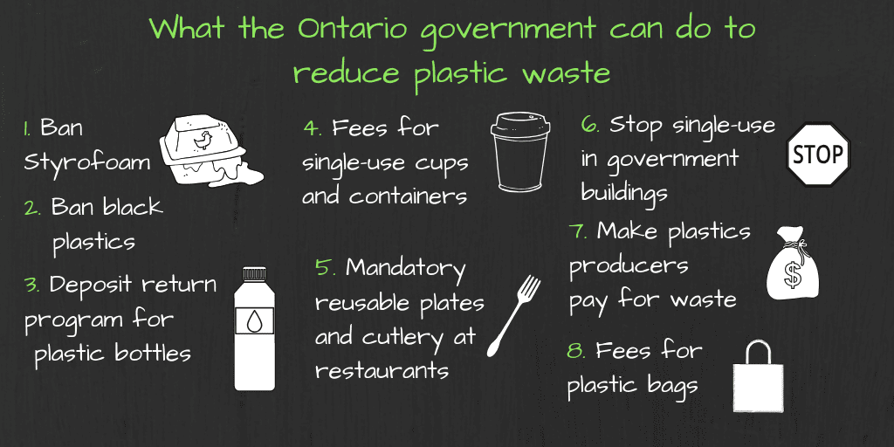
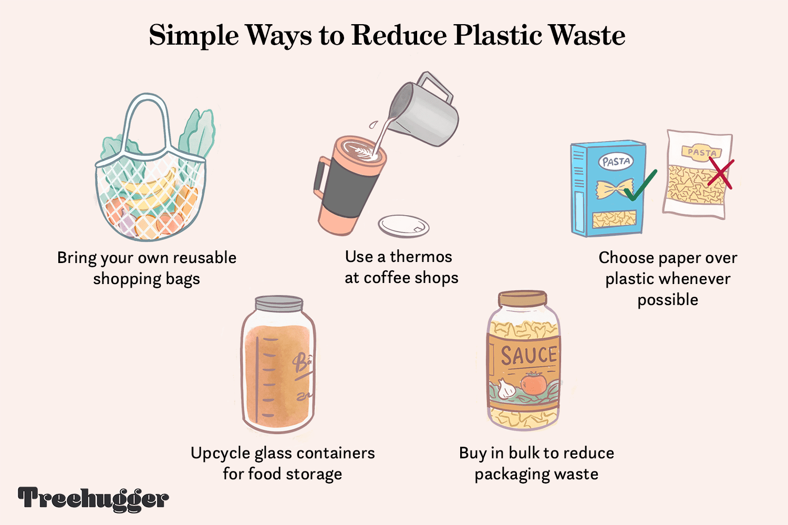

hhhhhhhhhhhhhhhhhhhhh
Preventions for Plastic Waste
Possible Preventions for Plastic Waste Generated From Industries
Preventing and mitigating plastic waste generated by industries requires a combination of regulatory measures, technological advancements, and sustainable practices. Here are several key strategies to address this issue:
1. Regulatory Measures:
Stringent Regulations: Governments can implement and enforce strict regulations on the production, use, and disposal of plastic materials. This includes setting limits on single-use plastics, promoting eco-friendly alternatives, and penalizing industries that do not adhere to proper waste management practices.
2. Circular Economy Practices:
Encouraging Recycling: Industries should actively participate in and promote recycling initiatives. This involves designing products with recyclability in mind, establishing recycling programs within facilities, and collaborating with recycling facilities to ensure the proper disposal and reprocessing of plastic waste.
3. Alternative Materials:
Research and Development: Invest in research and development of alternative materials that are environmentally friendly, biodegradable, and have lower ecological footprints compared to traditional plastics. This includes exploring plant-based plastics, biopolymers, and other sustainable materials.

4. Waste Reduction and Minimization:
Product Design: Industries can minimize plastic waste by designing products with reduced packaging, using lightweight materials, and optimizing product lifecycles. This not only reduces the amount of plastic used but also lowers transportation-related emissions.

5.Extended Producer Responsibility (EPR):
EPR Programs: Implement Extended Producer Responsibility programs, where industries are held responsible for the entire lifecycle of their products, including proper disposal and recycling. This incentivizes manufacturers to design products with easier recyclability and invest in recycling infrastructure.
6.Waste-to-Energy Technologies:
Advanced Waste-to-Energy: Explore and invest in advanced waste-to-energy technologies that can safely convert plastic waste into energy, reducing the reliance on landfills and decreasing the environmental impact of plastic disposal.

7.Public Awareness and Education:
Promoting Awareness: Create awareness campaigns to educate industries, consumers, and the general public about the environmental impact of plastic waste. Encourage responsible consumption, disposal, and recycling practices.
